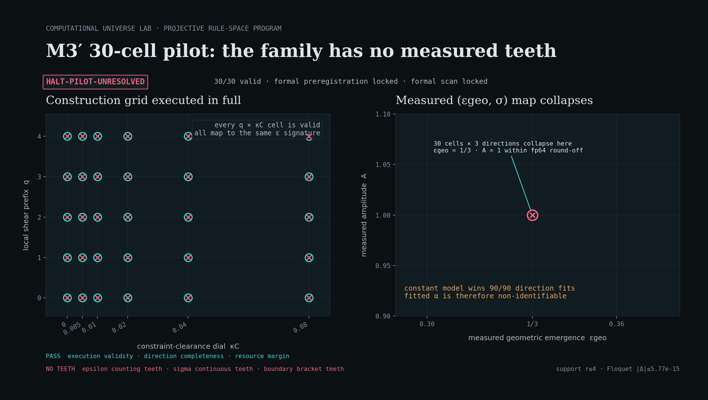

<title>Computational Universe Lab — Projective Rule-Space Program · Field Log</title>
<style>
  :root{
    --ground:#0b1013; --panel:#111b22; --panel-2:#0e171d; --line:#1e2c35;
    --ink:#dde6ec; --ink-dim:#aebac4; --muted:#7f909d;
    --metric:#45d4c6;      /* light / geometry */
    --matter:#e7a24e;      /* mass / energy   */
    --ok:#5fd08a; --ceil:#e5687a; --open:#7aa2d6;
    --serif:"Iowan Old Style","Palatino Linotype",Palatino,"Book Antiqua",Georgia,serif;
    --mono:"SF Mono","JetBrains Mono","Fira Code",ui-monospace,Menlo,Consolas,monospace;
    --maxw:1080px;
  }
  @media (prefers-color-scheme: light){
    :root{
      --ground:#f4f6f5; --panel:#ffffff; --panel-2:#eef2f2; --line:#d9e0e1;
      --ink:#16232b; --ink-dim:#3f5058; --muted:#647079;
      --metric:#0f9a8d; --matter:#c1741f;
      --ok:#2f9b5c; --ceil:#c34459; --open:#3d6db0;
    }
  }
  :root[data-theme="dark"]{
    --ground:#0b1013; --panel:#111b22; --panel-2:#0e171d; --line:#1e2c35;
    --ink:#dde6ec; --ink-dim:#aebac4; --muted:#7f909d;
    --metric:#45d4c6; --matter:#e7a24e; --ok:#5fd08a; --ceil:#e5687a; --open:#7aa2d6;
  }
  :root[data-theme="light"]{
    --ground:#f4f6f5; --panel:#ffffff; --panel-2:#eef2f2; --line:#d9e0e1;
    --ink:#16232b; --ink-dim:#3f5058; --muted:#647079;
    --metric:#0f9a8d; --matter:#c1741f; --ok:#2f9b5c; --ceil:#c34459; --open:#3d6db0;
  }

  *{box-sizing:border-box}
  body{margin:0;background:var(--ground);color:var(--ink);
    font-family:var(--serif);font-size:17px;line-height:1.62;
    -webkit-font-smoothing:antialiased;text-rendering:optimizeLegibility;}
  .wrap{max-width:var(--maxw);margin:0 auto;padding:0 24px}
  h1,h2,h3{text-wrap:balance;font-weight:600;letter-spacing:-.01em;line-height:1.12;margin:0}
  p{margin:0 0 1em}
  a{color:var(--metric)}
  .mono{font-family:var(--mono)}
  .eyebrow{font-family:var(--mono);font-size:12px;letter-spacing:.22em;text-transform:uppercase;
    color:var(--muted);font-weight:500}
  .tnum{font-variant-numeric:tabular-nums}

  /* ---------- hero ---------- */
  header.hero{position:relative;overflow:hidden;border-bottom:1px solid var(--line)}
  #skycanvas{position:absolute;inset:0;width:100%;height:100%;display:block;opacity:.9}
  .hero-inner{position:relative;z-index:2;padding:88px 0 64px}
  .hero h1{font-size:clamp(34px,6vw,62px);letter-spacing:-.025em}
  .hero .lede{font-size:clamp(19px,2.4vw,25px);color:var(--ink-dim);max-width:34ch;margin-top:22px}
  .hero .thesis{margin-top:30px;max-width:60ch;color:var(--ink);font-size:19px;
    border-left:2px solid var(--metric);padding-left:20px}
  .ribbon{display:flex;flex-wrap:wrap;gap:10px;margin-top:34px}
  .chip{font-family:var(--mono);font-size:12.5px;letter-spacing:.02em;padding:6px 12px;border-radius:2px;
    border:1px solid var(--line);background:color-mix(in srgb,var(--panel) 70%,transparent);white-space:nowrap}
  .chip b{font-weight:600}
  .chip .dot{display:inline-block;width:7px;height:7px;border-radius:50%;margin-right:8px;vertical-align:middle}

  /* ---------- stations ---------- */
  main{padding:0 0 40px}
  .station{padding:76px 0 12px;border-bottom:1px solid var(--line)}
  .st-head{display:flex;align-items:baseline;gap:16px;flex-wrap:wrap;margin-bottom:8px}
  .st-idx{font-family:var(--mono);font-size:13px;color:var(--metric);letter-spacing:.1em}
  .st-head h2{font-size:clamp(25px,3.6vw,36px)}
  .status{font-family:var(--mono);font-size:11.5px;letter-spacing:.12em;text-transform:uppercase;
    padding:4px 10px;border-radius:2px;font-weight:600;border:1px solid transparent}
  .status.ok{color:var(--ok);border-color:color-mix(in srgb,var(--ok) 45%,transparent);background:color-mix(in srgb,var(--ok) 12%,transparent)}
  .status.ceil{color:var(--ceil);border-color:color-mix(in srgb,var(--ceil) 45%,transparent);background:color-mix(in srgb,var(--ceil) 12%,transparent)}
  .status.open{color:var(--open);border-color:color-mix(in srgb,var(--open) 45%,transparent);background:color-mix(in srgb,var(--open) 12%,transparent)}
  .st-sub{color:var(--ink-dim);max-width:66ch;margin-bottom:26px}
  .grid{display:grid;grid-template-columns:1.05fr .95fr;gap:34px;align-items:start}
  @media(max-width:820px){.grid{grid-template-columns:1fr;gap:24px}}
  .fig{background:var(--panel);border:1px solid var(--line);border-radius:4px;padding:18px}
  .fig-cap{font-family:var(--mono);font-size:12px;color:var(--muted);margin-top:12px;letter-spacing:.02em;line-height:1.5}
  .prose h3{font-size:19px;margin:2px 0 10px}
  .prose p{color:var(--ink-dim);font-size:16.5px}
  .prose p strong{color:var(--ink);font-weight:600}

  /* data callouts */
  .stat-row{display:flex;flex-wrap:wrap;gap:22px;margin:20px 0 6px}
  .stat{min-width:96px}
  .stat .v{font-family:var(--mono);font-size:26px;font-weight:600;letter-spacing:-.02em;color:var(--metric);display:block}
  .stat .v.matter{color:var(--matter)}
  .stat .k{font-family:var(--mono);font-size:11px;letter-spacing:.08em;text-transform:uppercase;color:var(--muted)}

  .note{font-family:var(--mono);font-size:12.5px;color:var(--muted);border-top:1px dashed var(--line);
    padding-top:14px;margin-top:18px;line-height:1.6}

  /* toggles */
  .seg{display:inline-flex;border:1px solid var(--line);border-radius:3px;overflow:hidden;margin-bottom:14px}
  .seg button{font-family:var(--mono);font-size:12px;letter-spacing:.04em;background:transparent;color:var(--ink-dim);
    border:0;padding:7px 13px;cursor:pointer}
  .seg button[aria-pressed="true"]{background:var(--metric);color:var(--ground)}
  .seg button:focus-visible{outline:2px solid var(--metric);outline-offset:-2px}

  canvas.plot{width:100%;height:auto;display:block}
  .evidence-img{display:block;width:100%;height:auto;border:1px solid var(--line);border-radius:3px}

  /* manifold */
  .op{display:grid;grid-template-columns:120px 1fr auto;gap:14px;align-items:center;padding:9px 0;border-bottom:1px solid var(--line)}
  .op:last-child{border-bottom:0}
  .op .nm{font-family:var(--mono);font-size:13.5px}
  .op .nm small{color:var(--muted);font-size:11px}
  .bar{height:9px;border-radius:5px;background:var(--panel-2);position:relative;overflow:hidden}
  .bar > span{position:absolute;left:0;top:0;bottom:0;border-radius:5px}
  .op .pct{font-family:var(--mono);font-size:13px;color:var(--ink-dim);min-width:118px;text-align:right}
  .op.dead .nm,.op.dead .pct{color:var(--muted)}

  /* capstone */
  .formula{font-family:var(--mono);background:var(--panel-2);border:1px solid var(--line);border-radius:4px;
    padding:18px 20px;font-size:clamp(14px,2.2vw,18px);overflow-x:auto;letter-spacing:.01em;line-height:1.7;color:var(--ink)}
  .formula em{color:var(--metric);font-style:normal}
  .formula b{color:var(--matter);font-weight:600}
  .ledger{display:grid;grid-template-columns:1fr auto;gap:2px 16px;font-family:var(--mono);font-size:13px;margin-top:8px}
  .ledger div{padding:7px 0;border-bottom:1px solid var(--line)}
  .ledger .r{text-align:right;color:var(--ink-dim)}
  .ledger .yes{color:var(--ok)} .ledger .no{color:var(--ceil)}

  footer{padding:60px 0 80px}
  .coda-grid{display:grid;grid-template-columns:1fr 1fr;gap:20px;margin-top:26px}
  @media(max-width:720px){.coda-grid{grid-template-columns:1fr}}
  .card{background:var(--panel);border:1px solid var(--line);border-radius:4px;padding:20px}
  .card h4{font-family:var(--mono);font-size:12px;letter-spacing:.12em;text-transform:uppercase;margin:0 0 10px;color:var(--muted)}
  .card p{font-size:15.5px;color:var(--ink-dim);margin:0}
  .card.next{border-color:color-mix(in srgb,var(--matter) 40%,var(--line))}

  .themebtn{position:fixed;top:16px;right:16px;z-index:10;font-family:var(--mono);font-size:12px;
    background:color-mix(in srgb,var(--panel) 80%,transparent);color:var(--ink-dim);border:1px solid var(--line);
    border-radius:3px;padding:7px 11px;cursor:pointer;backdrop-filter:blur(6px)}
  .themebtn:focus-visible{outline:2px solid var(--metric)}
  .foot-note{color:var(--muted);font-family:var(--mono);font-size:12px;margin-top:40px;line-height:1.7}
  @media (prefers-reduced-motion: reduce){*{animation:none!important;transition:none!important}}
</style>

<button class="themebtn" id="themebtn" aria-label="Toggle light or dark theme">◐ theme</button>

<header class="hero">
  <canvas id="skycanvas" aria-hidden="true"></canvas>
  <div class="wrap hero-inner">
    <div class="eyebrow">Computational Universe Lab · Projective Rule-Space Program · Field Log</div>
    <h1>Physical law as an invariant of&nbsp;rule&nbsp;×&nbsp;projection</h1>
    <p class="lede">A computational search for which cellular-automaton rules produce law-like physics — and an honest map of how far it got.</p>
    <p class="thesis">A physical law is not <em>one</em> automaton rule. It is what stays invariant across the equivalence class of (discrete rule × observational projection). Real experiments prune that rule-space at the level of operator algebra. Everything below is measured from the engine, not asserted.</p>
    <div class="ribbon" id="ribbon"></div>
  </div>
</header>

<main class="wrap">

  <!-- STATION 1 -->
  <section class="station" id="s1">
    <div class="st-head"><span class="st-idx">01</span><h2>Matter warps the speed of light</h2><span class="status ok">✓ established</span></div>
    <p class="st-sub">The dynamical field θ(x) <em>is</em> the metric: the local light speed is c(x)=cos θ(x). Concentrate energy and θ rises, so c dips — a well. A test packet grazing it bends toward the mass. This is the measured c-field around a heavy lump, and rays traced through it.</p>
    <div class="grid">
      <div class="fig">
        <div class="seg" role="group" aria-label="Choose field slice">
          <button data-slice="slice_z" aria-pressed="true">slice ⟂ z</button>
          <button data-slice="slice_x" aria-pressed="false">slice ⟂ x</button>
        </div>
        <canvas class="plot" id="wellcanvas" width="760" height="520"></canvas>
        <div class="fig-cap" id="wellcap"></div>
      </div>
      <div class="prose">
        <h3>Attraction, in the momentum kick</h3>
        <p>A packet passing the well at impact parameter <span class="mono">b</span> picks up a transverse kick <span class="mono">Δ⟨k_y⟩</span>. Every value is <strong>negative</strong> — every packet turns toward the mass — while the matter-free baseline stays flat at zero to machine precision.</p>
        <div class="stat-row" id="deflstats"></div>
        <p>The kick peaks near the mass radius and falls off with <span class="mono">b</span> — the signature of an extended source, not a point mass.</p>
        <div class="note" id="dilnote"></div>
      </div>
    </div>
  </section>

  <!-- STATION 2 -->
  <section class="station" id="s2">
    <div class="st-head"><span class="st-idx">02</span><h2>Gravity binds cold matter into a soliton</h2><span class="status ok">✓ new positive result</span></div>
    <p class="st-sub">A relativistic packet disperses faster than self-gravity can hold it (that was R7's honest negative). Cold, non-relativistic matter is the fix: the 3D Schrödinger–Newton system. Free, the packet spreads; switch on self-gravity and it collapses into a stable, breathing soliton — width w(t) below.</p>
    <div class="grid">
      <div class="fig">
        <canvas class="plot" id="solcanvas" width="760" height="480"></canvas>
        <div class="fig-cap" id="solcap"></div>
      </div>
      <div class="prose">
        <h3>The binding threshold, pinned</h3>
        <p>Scanning the coupling g locates a sharp <strong>critical coupling</strong> between dispersal and binding — previously known only as "below 20," now bracketed to <span class="mono">g∈(2,5)</span>. The tightest soliton sits near <span class="mono">g≈10</span>.</p>
        <div class="stat-row" id="solstats"></div>
        <p>And it is dimensional — subtly. <strong>Only d=3 shows a true dispersal→soliton transition</strong> with a coupling to cross. The 1D kernel (∝|x|) confines unconditionally — no soliton family, matching the divergent 1D self-energy; d=2 is marginal. A genuine bound state — threshold <em>and</em> a radius law <span class="mono">r∝g⁻¹</span> — is a 3D privilege.</p>
        <div class="note" id="solnote"></div>
      </div>
    </div>
  </section>

  <!-- STATION 3 -->
  <section class="station" id="s3">
    <div class="st-head"><span class="st-idx">03</span><h2>Law-like rules live on a thin manifold</h2><span class="status ok">✓ established</span></div>
    <p class="st-sub">Screen one million random field-rules through the stability judge on the GPU. The survivors don't scatter — they collapse onto a narrow sub-manifold of the six-operator library. Two operators are simply dead; one is forced positive. The "regime of laws" is small and structured — and it holds at scale.</p>
    <div class="grid">
      <div class="fig">
        <div id="manifold"></div>
        <div class="fig-cap">Bar = how often an operator is active among survivors. <span style="color:var(--metric)">Teal</span> = enters positive, <span style="color:var(--matter)">amber</span> = enters negative. Two operators never survive at all.</div>
      </div>
      <div class="prose">
        <h3>What the survivors agree on</h3>
        <p><strong>Geometric stiffness ∇²θ is all but mandatory</strong> — active in 9 of 10 survivors and <em>always</em> positive (a real wave term, the seed of causality). Matter ρ sources the field in most. The restoring and damping terms are strictly negative — a stable well, gently dissipative.</p>
        <div class="stat-row" id="manstats"></div>
        <p><strong>(∇θ)² and the momentum current J are dead</strong> — zero survivors. The law-like corner of rule-space is effectively four operators wide.</p>
        <h3 style="margin-top:24px">What the equivalence principle demands</h3>
        <p>Stability is cheap. Add the response (J3) and equivalence-principle (J4) judges and the lawful fraction collapses — of a million rules, only <strong id="lawpct"></strong> pass the full funnel. And the survivors sharpen: <strong>∇²θ and ρ both lock to 100% active</strong> (Laplacian ~2.8× stronger, always positive) while the restoring and damping terms fade. Law-like dynamics look like a nearly pure <em>curvature ↔ matter</em> equation — the shape of a field equation.</p>
        <div id="lawfunnel"></div>
        <div class="note">Converged: the stable rate moves only 69.3%→69.1% from 10⁵ to 10⁶ rules, and (∇θ)²/J stay dead even among a million — no small-sample artifact. Full funnel batched &amp; jit-compiled on GPU (1.9× faster); bit-exact vs reference, bit-consistent numpy↔MLX.</div>
      </div>
    </div>
  </section>

  <!-- STATION 4 -->
  <section class="station" id="s4">
    <div class="st-head"><span class="st-idx">04</span><h2>The honest ceiling: this is scalar gravity</h2><span class="status ceil">✗ structural ceiling</span></div>
    <p class="st-sub">Push the derivation to its continuum limit and it closes — exactly. But closing it reveals what it is. The self-consistent source has a symbolic capstone:</p>
    <div class="formula" id="formula"></div>
    <div class="grid" style="margin-top:26px">
      <div class="prose">
        <h3>Why it can't be general relativity</h3>
        <p>The correction factor is <span class="mono">(v_g/c)²</span> — the gravitational charge is <strong>velocity-dependent</strong>. A full equivalence principle (everything falls the same) holds only in the ultra-relativistic limit; slow, heavy matter couples weakly. A single scalar can only couple to one scalar combination of T<sup>00</sup> — it structurally cannot make all bodies fall alike.</p>
        <p>Nordström's scalar gravity failed the same way (it left light undeflected); ours fails in the opposite direction (light couples most). <strong>Wrong for a different reason — still not GR.</strong> A scalar metric c=cos θ also can't steepen into a horizon.</p>
        <p>This isn't a bug to be patched. It's the project's most important piece of self-knowledge: a <em>completely understood</em> scalar gravity that knows exactly why it isn't the real thing — and points precisely at the next door.</p>
      </div>
      <div class="prose">
        <h3>What is symbolically nailed down</h3>
        <div class="ledger" id="ledger"></div>
        <div class="note" id="shadownote"></div>
      </div>
    </div>
  </section>

  <!-- STATION 5 · v2 ACTIVE FRONTIER -->
  <section class="station" id="s5">
    <div class="st-head"><span class="st-idx">05</span><h2>M3′ pilot：局域构造族没有形成可分辨边界</h2><span class="status ceil">halt · unresolved</span></div>
    <p class="st-sub">严格局域的 <span class="mono">q × κ<sub>C</sub> = 5 × 6</span> 构造格已全部通过真实实空间时间步运行。执行链成立，但 30 个构造标签在运行后实测的 <span class="mono">(ε<sub>geo</sub>, σ)</span> 中塌缩为同一点；因此正式预注册和正式扫描继续锁定。</p>
    <div class="grid">
      <div class="fig">
        
        <div class="fig-cap">30/30 构造格有效；图中红色叉号表示“无边界牙齿”的 pilot 停手状态，不代表 M3′ 物理 FAIL。</div>
      </div>
      <div class="prose">
        <h3>执行成功，观测坐标却没有张开</h3>
        <p>每格都由真实 <span class="mono">realspace_step_factory</span> 执行 28 个规范 delta 输入；总计 840 次测量运行和 30 次验证运行。最大支撑半径为 4，Floquet 模误差保持在 fp64 门内。</p>
        <div class="stat-row">
          <div class="stat"><span class="v">30/30</span><span class="k">valid cells</span></div>
          <div class="stat"><span class="v">1/3</span><span class="k">εgeo · all cells</span></div>
          <div class="stat"><span class="v matter">90/90</span><span class="k">constant σ fits</span></div>
        </div>
        <p>全部方向均测得 <span class="mono">N<sub>curv</sub>=6</span>、<span class="mono">j<sub>hand</sub>=4</span>；振幅 <span class="mono">A=1+O(10<sup>−15</sup>)</span>，所以拟合器返回的 α 不可识别。方向级 σ 判齿 FAIL 不能冒充 M3′ 物理 FAIL。</p>
        <div class="note">当前裁定：<strong style="color:var(--ceil)">HALT-PILOT-UNRESOLVED</strong> · formal preregistration = locked · formal scan = locked<br><a href="../../docsv2/v2-小报告-M3-30格pilot-2026-07-30.md">打开权威 pilot 小报告</a></div>
      </div>
    </div>
  </section>

</main>

<footer class="wrap">
  <div class="eyebrow">The next door</div>
  <h2 style="font-size:clamp(24px,3.4vw,34px);margin:12px 0 4px;max-width:22ch">先让构造—观测映射长出牙齿</h2>
  <p style="color:var(--ink-dim);max-width:64ch">Round 0 已证明严格局域家族可执行；30 格 pilot 进一步证明当前 <span class="mono">q/κ<sub>C</sub></span> 变化没有传递成 evaluator 可分辨的 <span class="mono">(ε<sub>geo</sub>,σ)</span> 变化。下一步不是改阈值或开长跑，而是回 M0′ evaluator / 构造族追因，提出能改变实测坐标且有正负控的新局域自由度。</p>
  <div class="coda-grid">
    <div class="card">
      <h4>本轮已经冻结</h4>
      <p>30 格、三方向、840 次 delta 测量、资源复核和停手判据均已入证据链。结果只支持“当前构造族对冻结 evaluator 无牙”，不外推为所有局域族不可达。</p>
    </div>
    <div class="card next">
      <h4>唯一允许的下一动作</h4>
      <p>为新局域自由度给出坐标敏感性机制、M0′ 正负控与非零裕度，再另行冻结 Round 0 和 pilot。<strong>正式 10²–10³ 扫描保持锁定。</strong></p>
    </div>
  </div>
  <p class="foot-note" id="footnote"></p>
</footer>

<script>
const DATA = {"field": {"cmin": 0.6493, "cmax": 0.922, "G": 40, "slice_z": [[0.9139, 0.9136, 0.9131, 0.9124, 0.9115, 0.9103, 0.909, 0.9075, 0.9058, 0.904, 0.9021, 0.9001, 0.8982, 0.8962, 0.8944, 0.8928, 0.8914, 0.8904, 0.8897, 0.8894, 0.8895, 0.8901, 0.8911, 0.8923, 0.8939, 0.8957, 0.8976, 0.8996, 0.9015, 0.9035, 0.9053, 0.907, 0.9086, 0.91, 0.9112, 0.9122, 0.9129, 0.9135, 0.9139, 0.914], [0.9136, 0.9133, 0.9128, 0.912, 0.9111, 0.9099, 0.9085, 0.9069, 0.9052, 0.9033, 0.9012, 0.8991, 0.8969, 0.8948, 0.8928, 0.8909, 0.8893, 0.888, 0.8871, 0.8867, 0.8867, 0.8873, 0.8883, 0.8897, 0.8914, 0.8934, 0.8955, 0.8977, 0.8999, 0.902, 0.904, 0.9059, 0.9076, 0.9091, 0.9105, 0.9115, 0.9124, 0.913, 0.9134, 0.9136], [0.9131, 0.9128, 0.9123, 0.9115, 0.9105, 0.9093, 0.9078, 0.9061, 0.9042, 0.9021, 0.8999, 0.8975, 0.8951, 0.8927, 0.8903, 0.888, 0.8861, 0.8844, 0.8833, 0.8827, 0.8826, 0.8832, 0.8843, 0.8859, 0.8879, 0.8902, 0.8926, 0.8952, 0.8977, 0.9001, 0.9024, 0.9045, 0.9064, 0.9081, 0.9096, 0.9108, 0.9117, 0.9124, 0.9129, 0.9131], [0.9125, 0.9122, 0.9117, 0.9109, 0.9098, 0.9085, 0.9069, 0.9051, 0.903, 0.9007, 0.8982, 0.8955, 0.8926, 0.8897, 0.8869, 0.8841, 0.8816, 0.8795, 0.878, 0.8771, 0.8769, 0.8776, 0.8789, 0.8808, 0.8833, 0.886, 0.889, 0.892, 0.895, 0.8978, 0.9005, 0.9029, 0.905, 0.9069, 0.9085, 0.9099, 0.9109, 0.9117, 0.9123, 0.9125], [0.9118, 0.9116, 0.911, 0.9101, 0.909, 0.9076, 0.9058, 0.9038, 0.9015, 0.8989, 0.896, 0.8929, 0.8895, 0.886, 0.8825, 0.879, 0.8758, 0.873, 0.8709, 0.8696, 0.8693, 0.8701, 0.8717, 0.8742, 0.8773, 0.8808, 0.8845, 0.8881, 0.8917, 0.8951, 0.8981, 0.9009, 0.9034, 0.9055, 0.9074, 0.9089, 0.9101, 0.9109, 0.9115, 0.9118], [0.9111, 0.9108, 0.9102, 0.9093, 0.9081, 0.9065, 0.9046, 0.9023, 0.8997, 0.8968, 0.8934, 0.8897, 0.8857, 0.8814, 0.877, 0.8725, 0.8682, 0.8645, 0.8616, 0.8597, 0.8593, 0.8602, 0.8624, 0.8657, 0.8697, 0.8742, 0.8789, 0.8835, 0.8878, 0.8918, 0.8955, 0.8987, 0.9016, 0.904, 0.9061, 0.9078, 0.9091, 0.9101, 0.9107, 0.9111], [0.9103, 0.91, 0.9094, 0.9084, 0.907, 0.9053, 0.9032, 0.9007, 0.8978, 0.8944, 0.8905, 0.8861, 0.8812, 0.8759, 0.8702, 0.8644, 0.8587, 0.8535, 0.8494, 0.8468, 0.846, 0.8472, 0.8502, 0.8547, 0.8602, 0.8661, 0.8722, 0.878, 0.8833, 0.8882, 0.8925, 0.8963, 0.8996, 0.9024, 0.9047, 0.9066, 0.9081, 0.9092, 0.9099, 0.9103], [0.9095, 0.9092, 0.9085, 0.9074, 0.906, 0.9041, 0.9018, 0.8989, 0.8956, 0.8917, 0.8872, 0.882, 0.8761, 0.8695, 0.8622, 0.8545, 0.8467, 0.8396, 0.8337, 0.8298, 0.8286, 0.8303, 0.8346, 0.8408, 0.8483, 0.8563, 0.8642, 0.8716, 0.8783, 0.8842, 0.8893, 0.8937, 0.8975, 0.9007, 0.9033, 0.9054, 0.907, 0.9082, 0.909, 0.9095], [0.9087, 0.9084, 0.9076, 0.9065, 0.9049, 0.9028, 0.9002, 0.8971, 0.8934, 0.8889, 0.8837, 0.8775, 0.8704, 0.8621, 0.8528, 0.8427, 0.8322, 0.8222, 0.8138, 0.8083, 0.8065, 0.8088, 0.8148, 0.8236, 0.8339, 0.8447, 0.855, 0.8644, 0.8727, 0.8799, 0.8859, 0.8911, 0.8953, 0.8989, 0.9018, 0.9041, 0.906, 0.9073, 0.9082, 0.9087], [0.9079, 0.9076, 0.9067, 0.9055, 0.9038, 0.9015, 0.8987, 0.8952, 0.8911, 0.886, 0.88, 0.8728, 0.8642, 0.8541, 0.8423, 0.8291, 0.8151, 0.8014, 0.7897, 0.7818, 0.7792, 0.7824, 0.7908, 0.803, 0.8171, 0.8314, 0.8448, 0.8567, 0.8668, 0.8754, 0.8825, 0.8884, 0.8932, 0.8972, 0.9004, 0.903, 0.9049, 0.9064, 0.9073, 0.9078], [0.9072, 0.9068, 0.9059, 0.9046, 0.9027, 0.9003, 0.8972, 0.8934, 0.8888, 0.8832, 0.8764, 0.868, 0.8579, 0.8457, 0.8311, 0.8143, 0.796, 0.7778, 0.7619, 0.7511, 0.7475, 0.7518, 0.7633, 0.7797, 0.7984, 0.817, 0.834, 0.8486, 0.8609, 0.8709, 0.8791, 0.8858, 0.8912, 0.8956, 0.8991, 0.9018, 0.904, 0.9055, 0.9065, 0.9071], [0.9065, 0.906, 0.9051, 0.9037, 0.9017, 0.8991, 0.8958, 0.8917, 0.8867, 0.8805, 0.8729, 0.8635, 0.8518, 0.8374, 0.8199, 0.7993, 0.7765, 0.7533, 0.7328, 0.7187, 0.7139, 0.7196, 0.7345, 0.7557, 0.7794, 0.8026, 0.8234, 0.8409, 0.8553, 0.8668, 0.8761, 0.8834, 0.8894, 0.8941, 0.8979, 0.9008, 0.9031, 0.9047, 0.9058, 0.9064], [0.9058, 0.9054, 0.9044, 0.9029, 0.9008, 0.898, 0.8945, 0.8902, 0.8848, 0.8781, 0.8698, 0.8595, 0.8464, 0.8301, 0.8099, 0.7859, 0.7587, 0.7308, 0.706, 0.6888, 0.6829, 0.6899, 0.7081, 0.7338, 0.7623, 0.7898, 0.8141, 0.8343, 0.8505, 0.8634, 0.8735, 0.8815, 0.8878, 0.8929, 0.8969, 0.9, 0.9024, 0.9041, 0.9052, 0.9058], [0.9053, 0.9048, 0.9038, 0.9022, 0.9, 0.8971, 0.8935, 0.8889, 0.8832, 0.8761, 0.8673, 0.8562, 0.8422, 0.8244, 0.8023, 0.7756, 0.7453, 0.7139, 0.6859, 0.6664, 0.6599, 0.6679, 0.6886, 0.7177, 0.7498, 0.7805, 0.8074, 0.8295, 0.8471, 0.8608, 0.8716, 0.88, 0.8867, 0.892, 0.8961, 0.8993, 0.9018, 0.9035, 0.9047, 0.9053], [0.9049, 0.9044, 0.9033, 0.9017, 0.8994, 0.8964, 0.8926, 0.8878, 0.8819, 0.8746, 0.8655, 0.8539, 0.8393, 0.8209, 0.7978, 0.77, 0.7384, 0.7056, 0.6764, 0.6561, 0.6493, 0.6579, 0.6798, 0.7104, 0.744, 0.7761, 0.8041, 0.827, 0.8452, 0.8595, 0.8705, 0.8792, 0.886, 0.8914, 0.8956, 0.8989, 0.9014, 0.9032, 0.9043, 0.9049], [0.9046, 0.9041, 0.903, 0.9013, 0.8989, 0.8958, 0.8919, 0.8871, 0.8811, 0.8736, 0.8643, 0.8527, 0.8381, 0.8197, 0.7969, 0.7696, 0.7388, 0.707, 0.6788, 0.6594, 0.6532, 0.6617, 0.6832, 0.713, 0.7458, 0.7773, 0.8047, 0.8273, 0.8452, 0.8593, 0.8703, 0.879, 0.8858, 0.8912, 0.8954, 0.8987, 0.9011, 0.9029, 0.9041, 0.9046], [0.9045, 0.9039, 0.9027, 0.901, 0.8986, 0.8954, 0.8915, 0.8866, 0.8805, 0.8731, 0.8639, 0.8525, 0.8383, 0.8207, 0.7992, 0.7738, 0.7455, 0.7169, 0.6917, 0.6747, 0.6696, 0.6777, 0.6974, 0.7246, 0.7545, 0.7834, 0.8088, 0.83, 0.8469, 0.8604, 0.871, 0.8794, 0.886, 0.8913, 0.8954, 0.8987, 0.9011, 0.9029, 0.904, 0.9045], [0.9044, 0.9038, 0.9026, 0.9008, 0.8984, 0.8953, 0.8913, 0.8864, 0.8803, 0.873, 0.864, 0.853, 0.8395, 0.8231, 0.8036, 0.781, 0.7565, 0.7321, 0.7113, 0.6976, 0.694, 0.7015, 0.7186, 0.742, 0.768, 0.7931, 0.8156, 0.8346, 0.85, 0.8625, 0.8724, 0.8803, 0.8867, 0.8918, 0.8958, 0.8989, 0.9013, 0.903, 0.904, 0.9045], [0.9045, 0.9039, 0.9027, 0.9009, 0.8984, 0.8952, 0.8913, 0.8864, 0.8804, 0.8732, 0.8644, 0.8538, 0.8412, 0.8262, 0.8087, 0.7892, 0.7687, 0.749, 0.7328, 0.7227, 0.7209, 0.7279, 0.7424, 0.7619, 0.7835, 0.8047, 0.8239, 0.8403, 0.854, 0.8653, 0.8744, 0.8818, 0.8877, 0.8925, 0.8963, 0.8993, 0.9016, 0.9032, 0.9042, 0.9046], [0.9048, 0.9041, 0.9028, 0.901, 0.8985, 0.8954, 0.8914, 0.8865, 0.8806, 0.8735, 0.865, 0.8548, 0.8428, 0.829, 0.8133, 0.7964, 0.7795, 0.764, 0.7521, 0.7456, 0.7457, 0.7526, 0.765, 0.7812, 0.799, 0.8165, 0.8325, 0.8466, 0.8586, 0.8685, 0.8767, 0.8835, 0.889, 0.8935, 0.8971, 0.8999, 0.9021, 0.9036, 0.9045, 0.9049], [0.9051, 0.9044, 0.9031, 0.9013, 0.8988, 0.8956, 0.8917, 0.8869, 0.881, 0.874, 0.8656, 0.8556, 0.844, 0.8308, 0.8163, 0.8013, 0.7869, 0.7748, 0.7666, 0.7633, 0.7655, 0.7728, 0.7841, 0.7979, 0.8127, 0.8273, 0.8408, 0.8528, 0.8632, 0.872, 0.8793, 0.8855, 0.8905, 0.8947, 0.898, 0.9007, 0.9027, 0.9041, 0.9049, 0.9053], [0.9055, 0.9048, 0.9035, 0.9016, 0.8992, 0.896, 0.8921, 0.8873, 0.8815, 0.8745, 0.8661, 0.8561, 0.8445, 0.8313, 0.817, 0.8027, 0.7899, 0.7802, 0.7749, 0.7746, 0.7792, 0.7876, 0.7987, 0.8113, 0.8242, 0.8368, 0.8483, 0.8586, 0.8677, 0.8754, 0.882, 0.8876, 0.8922, 0.896, 0.8991, 0.9016, 0.9034, 0.9047, 0.9055, 0.9057], [0.906, 0.9052, 0.904, 0.9021, 0.8997, 0.8966, 0.8927, 0.8879, 0.8821, 0.875, 0.8665, 0.8562, 0.8441, 0.8303, 0.8155, 0.8008, 0.7884, 0.7802, 0.7773, 0.78, 0.7872, 0.7974, 0.8093, 0.8215, 0.8335, 0.8447, 0.8548, 0.8639, 0.8719, 0.8788, 0.8847, 0.8897, 0.8939, 0.8974, 0.9003, 0.9025, 0.9042, 0.9054, 0.9061, 0.9063], [0.9066, 0.9058, 0.9045, 0.9027, 0.9003, 0.8972, 0.8934, 0.8886, 0.8828, 0.8757, 0.867, 0.8563, 0.8434, 0.8285, 0.8123, 0.7965, 0.7836, 0.7761, 0.7752, 0.7808, 0.791, 0.8035, 0.8166, 0.8292, 0.8408, 0.8512, 0.8605, 0.8686, 0.8758, 0.8819, 0.8873, 0.8918, 0.8956, 0.8988, 0.9015, 0.9035, 0.9051, 0.9062, 0.9068, 0.9069], [0.9073, 0.9065, 0.9052, 0.9034, 0.901, 0.898, 0.8942, 0.8895, 0.8838, 0.8766, 0.8677, 0.8566, 0.843, 0.8268, 0.8091, 0.7917, 0.7779, 0.7707, 0.7716, 0.7798, 0.7928, 0.8076, 0.8222, 0.8354, 0.8469, 0.8568, 0.8654, 0.8729, 0.8793, 0.8849, 0.8897, 0.8939, 0.8974, 0.9003, 0.9027, 0.9046, 0.906, 0.907, 0.9075, 0.9076], [0.908, 0.9072, 0.9059, 0.9041, 0.9018, 0.8989, 0.8952, 0.8907, 0.885, 0.8779, 0.8689, 0.8577, 0.8436, 0.8267, 0.8078, 0.7894, 0.7749, 0.768, 0.7701, 0.7802, 0.7952, 0.8117, 0.8273, 0.8409, 0.8523, 0.8618, 0.8699, 0.8767, 0.8826, 0.8877, 0.8921, 0.8959, 0.899, 0.9017, 0.9039, 0.9056, 0.9069, 0.9078, 0.9083, 0.9083], [0.9087, 0.9079, 0.9067, 0.905, 0.9027, 0.8999, 0.8964, 0.892, 0.8865, 0.8796, 0.8709, 0.8599, 0.846, 0.8292, 0.8104, 0.792, 0.7778, 0.7712, 0.774, 0.7849, 0.8006, 0.8175, 0.8331, 0.8464, 0.8574, 0.8665, 0.874, 0.8803, 0.8857, 0.8903, 0.8943, 0.8978, 0.9007, 0.9031, 0.9051, 0.9067, 0.9078, 0.9086, 0.909, 0.9091], [0.9094, 0.9087, 0.9075, 0.9059, 0.9037, 0.901, 0.8977, 0.8935, 0.8883, 0.8819, 0.8737, 0.8634, 0.8504, 0.8348, 0.8174, 0.8006, 0.7876, 0.7818, 0.7847, 0.795, 0.8097, 0.8255, 0.8401, 0.8525, 0.8627, 0.871, 0.8779, 0.8837, 0.8886, 0.8928, 0.8964, 0.8996, 0.9022, 0.9044, 0.9062, 0.9077, 0.9088, 0.9095, 0.9098, 0.9098], [0.9102, 0.9094, 0.9083, 0.9068, 0.9048, 0.9022, 0.8991, 0.8952, 0.8904, 0.8845, 0.8771, 0.8679, 0.8565, 0.843, 0.8282, 0.8139, 0.8031, 0.7984, 0.8008, 0.8096, 0.8221, 0.8356, 0.8482, 0.859, 0.868, 0.8755, 0.8816, 0.8868, 0.8913, 0.8951, 0.8984, 0.9012, 0.9037, 0.9057, 0.9073, 0.9087, 0.9096, 0.9103, 0.9106, 0.9106], [0.9109, 0.9102, 0.9091, 0.9077, 0.9058, 0.9035, 0.9006, 0.897, 0.8927, 0.8874, 0.881, 0.8731, 0.8636, 0.8526, 0.8408, 0.8297, 0.8213, 0.8176, 0.8195, 0.8262, 0.8359, 0.8466, 0.8568, 0.8657, 0.8734, 0.8798, 0.8852, 0.8898, 0.8938, 0.8972, 0.9002, 0.9028, 0.905, 0.9068, 0.9084, 0.9096, 0.9105, 0.911, 0.9113, 0.9113], [0.9116, 0.9109, 0.91, 0.9086, 0.9069, 0.9047, 0.9021, 0.8989, 0.895, 0.8904, 0.8849, 0.8784, 0.8708, 0.8622, 0.8533, 0.8451, 0.839, 0.8363, 0.8375, 0.8423, 0.8493, 0.8572, 0.8651, 0.8722, 0.8784, 0.8838, 0.8885, 0.8925, 0.8961, 0.8992, 0.9019, 0.9042, 0.9062, 0.9079, 0.9093, 0.9104, 0.9112, 0.9118, 0.912, 0.912], [0.9123, 0.9116, 0.9107, 0.9095, 0.9079, 0.9059, 0.9035, 0.9007, 0.8973, 0.8934, 0.8888, 0.8834, 0.8775, 0.871, 0.8644, 0.8586, 0.8542, 0.8523, 0.853, 0.8562, 0.861, 0.8667, 0.8725, 0.878, 0.883, 0.8875, 0.8915, 0.895, 0.8981, 0.9009, 0.9033, 0.9054, 0.9073, 0.9088, 0.9101, 0.9112, 0.9119, 0.9124, 0.9126, 0.9126], [0.9128, 0.9123, 0.9114, 0.9103, 0.9088, 0.907, 0.9049, 0.9024, 0.8994, 0.896, 0.8922, 0.8879, 0.8832, 0.8784, 0.8736, 0.8694, 0.8664, 0.8649, 0.8653, 0.8673, 0.8706, 0.8746, 0.8788, 0.8831, 0.887, 0.8907, 0.8941, 0.8971, 0.8999, 0.9024, 0.9046, 0.9065, 0.9082, 0.9097, 0.9109, 0.9118, 0.9125, 0.913, 0.9132, 0.9132], [0.9134, 0.9128, 0.912, 0.911, 0.9097, 0.908, 0.9061, 0.9039, 0.9013, 0.8984, 0.8952, 0.8917, 0.888, 0.8843, 0.8807, 0.8777, 0.8755, 0.8744, 0.8745, 0.8758, 0.878, 0.8808, 0.884, 0.8872, 0.8904, 0.8934, 0.8963, 0.8989, 0.9014, 0.9036, 0.9056, 0.9074, 0.909, 0.9103, 0.9114, 0.9123, 0.913, 0.9135, 0.9137, 0.9136], [0.9138, 0.9133, 0.9126, 0.9116, 0.9104, 0.9089, 0.9072, 0.9052, 0.9029, 0.9004, 0.8977, 0.8948, 0.8918, 0.8889, 0.8861, 0.8838, 0.8821, 0.8812, 0.8812, 0.882, 0.8835, 0.8855, 0.8879, 0.8904, 0.893, 0.8955, 0.898, 0.9003, 0.9025, 0.9046, 0.9064, 0.9081, 0.9095, 0.9108, 0.9119, 0.9127, 0.9134, 0.9138, 0.914, 0.914], [0.9141, 0.9137, 0.913, 0.9121, 0.911, 0.9096, 0.908, 0.9062, 0.9042, 0.902, 0.8997, 0.8972, 0.8947, 0.8923, 0.8901, 0.8882, 0.8868, 0.8861, 0.8859, 0.8864, 0.8874, 0.8889, 0.8908, 0.8928, 0.8949, 0.8971, 0.8992, 0.9013, 0.9033, 0.9052, 0.9069, 0.9085, 0.9099, 0.9111, 0.9122, 0.913, 0.9137, 0.9141, 0.9143, 0.9143], [0.9143, 0.9139, 0.9133, 0.9124, 0.9114, 0.9101, 0.9087, 0.907, 0.9052, 0.9032, 0.9011, 0.8989, 0.8968, 0.8947, 0.8928, 0.8912, 0.89, 0.8893, 0.889, 0.8893, 0.89, 0.8912, 0.8926, 0.8943, 0.8961, 0.8981, 0.9, 0.9019, 0.9038, 0.9056, 0.9072, 0.9087, 0.9101, 0.9113, 0.9123, 0.9131, 0.9138, 0.9142, 0.9145, 0.9145], [0.9144, 0.914, 0.9134, 0.9127, 0.9117, 0.9105, 0.9091, 0.9075, 0.9058, 0.904, 0.9021, 0.9001, 0.8981, 0.8962, 0.8945, 0.8931, 0.8919, 0.8912, 0.8909, 0.891, 0.8915, 0.8924, 0.8936, 0.895, 0.8967, 0.8984, 0.9002, 0.9021, 0.9038, 0.9056, 0.9072, 0.9087, 0.9101, 0.9113, 0.9123, 0.9131, 0.9138, 0.9142, 0.9145, 0.9145], [0.9144, 0.914, 0.9135, 0.9127, 0.9118, 0.9106, 0.9093, 0.9078, 0.9062, 0.9044, 0.9025, 0.9006, 0.8988, 0.897, 0.8953, 0.8939, 0.8927, 0.8919, 0.8915, 0.8915, 0.8919, 0.8926, 0.8936, 0.895, 0.8965, 0.8982, 0.8999, 0.9017, 0.9035, 0.9052, 0.9069, 0.9084, 0.9098, 0.911, 0.9121, 0.913, 0.9136, 0.9141, 0.9144, 0.9145], [0.9142, 0.9139, 0.9134, 0.9126, 0.9117, 0.9106, 0.9093, 0.9078, 0.9061, 0.9044, 0.9025, 0.9007, 0.8988, 0.897, 0.8953, 0.8938, 0.8926, 0.8917, 0.8911, 0.891, 0.8912, 0.8919, 0.8928, 0.8941, 0.8956, 0.8973, 0.8991, 0.9009, 0.9027, 0.9045, 0.9063, 0.9079, 0.9093, 0.9106, 0.9117, 0.9126, 0.9134, 0.9139, 0.9142, 0.9143]], "slice_x": [[0.918, 0.9179, 0.9177, 0.9174, 0.9169, 0.9163, 0.9156, 0.9148, 0.914, 0.913, 0.912, 0.911, 0.91, 0.909, 0.9081, 0.9072, 0.9065, 0.9059, 0.9054, 0.9052, 0.9051, 0.9052, 0.9054, 0.9059, 0.9065, 0.9072, 0.9081, 0.909, 0.91, 0.911, 0.912, 0.913, 0.914, 0.9148, 0.9156, 0.9163, 0.9169, 0.9174, 0.9177, 0.9179], [0.9178, 0.9177, 0.9175, 0.9172, 0.9167, 0.9161, 0.9154, 0.9146, 0.9137, 0.9127, 0.9116, 0.9106, 0.9095, 0.9085, 0.9075, 0.9066, 0.9059, 0.9052, 0.9047, 0.9045, 0.9044, 0.9045, 0.9047, 0.9052, 0.9059, 0.9066, 0.9075, 0.9085, 0.9095, 0.9106, 0.9116, 0.9127, 0.9137, 0.9146, 0.9154, 0.9161, 0.9167, 0.9172, 0.9175, 0.9177], [0.9175, 0.9174, 0.9172, 0.9169, 0.9164, 0.9157, 0.915, 0.9141, 0.9131, 0.9121, 0.911, 0.9098, 0.9087, 0.9076, 0.9065, 0.9056, 0.9047, 0.904, 0.9035, 0.9032, 0.9031, 0.9032, 0.9035, 0.904, 0.9047, 0.9056, 0.9065, 0.9076, 0.9087, 0.9098, 0.911, 0.9121, 0.9131, 0.9141, 0.915, 0.9157, 0.9164, 0.9169, 0.9172, 0.9174], [0.9171, 0.917, 0.9168, 0.9164, 0.9158, 0.9152, 0.9143, 0.9134, 0.9124, 0.9112, 0.91, 0.9088, 0.9075, 0.9063, 0.9051, 0.904, 0.9031, 0.9023, 0.9017, 0.9014, 0.9013, 0.9014, 0.9017, 0.9023, 0.9031, 0.904, 0.9051, 0.9063, 0.9075, 0.9088, 0.91, 0.9112, 0.9124, 0.9134, 0.9143, 0.9152, 0.9158, 0.9164, 0.9168, 0.917], [0.9165, 0.9165, 0.9162, 0.9158, 0.9152, 0.9145, 0.9136, 0.9125, 0.9114, 0.9101, 0.9088, 0.9074, 0.906, 0.9046, 0.9033, 0.902, 0.9009, 0.9, 0.8993, 0.8989, 0.8988, 0.8989, 0.8993, 0.9, 0.9009, 0.902, 0.9033, 0.9046, 0.906, 0.9074, 0.9088, 0.9101, 0.9114, 0.9125, 0.9136, 0.9145, 0.9152, 0.9158, 0.9162, 0.9165], [0.9159, 0.9158, 0.9155, 0.9151, 0.9144, 0.9136, 0.9126, 0.9115, 0.9102, 0.9088, 0.9073, 0.9057, 0.9041, 0.9025, 0.9009, 0.8995, 0.8982, 0.8971, 0.8963, 0.8958, 0.8956, 0.8958, 0.8963, 0.8971, 0.8982, 0.8995, 0.9009, 0.9025, 0.9041, 0.9057, 0.9073, 0.9088, 0.9102, 0.9115, 0.9126, 0.9136, 0.9144, 0.9151, 0.9155, 0.9158], [0.9152, 0.9151, 0.9147, 0.9142, 0.9135, 0.9126, 0.9115, 0.9102, 0.9088, 0.9072, 0.9055, 0.9036, 0.9018, 0.8999, 0.8981, 0.8963, 0.8948, 0.8935, 0.8925, 0.8919, 0.8917, 0.8919, 0.8925, 0.8935, 0.8948, 0.8963, 0.8981, 0.8999, 0.9018, 0.9036, 0.9055, 0.9072, 0.9088, 0.9102, 0.9115, 0.9126, 0.9135, 0.9142, 0.9147, 0.9151], [0.9143, 0.9142, 0.9139, 0.9133, 0.9125, 0.9115, 0.9103, 0.9088, 0.9072, 0.9054, 0.9034, 0.9013, 0.8991, 0.8968, 0.8946, 0.8926, 0.8907, 0.8891, 0.8879, 0.8871, 0.8869, 0.8871, 0.8879, 0.8891, 0.8907, 0.8926, 0.8946, 0.8968, 0.8991, 0.9013, 0.9034, 0.9054, 0.9072, 0.9088, 0.9103, 0.9115, 0.9125, 0.9133, 0.9139, 0.9142], [0.9134, 0.9133, 0.9129, 0.9123, 0.9114, 0.9103, 0.9089, 0.9073, 0.9054, 0.9033, 0.901, 0.8986, 0.896, 0.8933, 0.8907, 0.8881, 0.8858, 0.8838, 0.8823, 0.8813, 0.881, 0.8813, 0.8823, 0.8838, 0.8858, 0.8881, 0.8907, 0.8933, 0.896, 0.8986, 0.901, 0.9033, 0.9054, 0.9073, 0.9089, 0.9103, 0.9114, 0.9123, 0.9129, 0.9133], [0.9125, 0.9124, 0.912, 0.9113, 0.9103, 0.909, 0.9075, 0.9056, 0.9035, 0.9011, 0.8984, 0.8955, 0.8925, 0.8893, 0.8861, 0.883, 0.8801, 0.8776, 0.8756, 0.8744, 0.874, 0.8744, 0.8756, 0.8776, 0.8801, 0.883, 0.8861, 0.8893, 0.8925, 0.8955, 0.8984, 0.9011, 0.9035, 0.9056, 0.9075, 0.909, 0.9103, 0.9113, 0.912, 0.9124], [0.9116, 0.9114, 0.9109, 0.9102, 0.9091, 0.9077, 0.9059, 0.9039, 0.9014, 0.8987, 0.8956, 0.8922, 0.8886, 0.8848, 0.8809, 0.877, 0.8734, 0.8702, 0.8677, 0.8661, 0.8656, 0.8661, 0.8677, 0.8702, 0.8734, 0.877, 0.8809, 0.8848, 0.8886, 0.8922, 0.8956, 0.8987, 0.9014, 0.9039, 0.9059, 0.9077, 0.9091, 0.9102, 0.9109, 0.9114], [0.9106, 0.9104, 0.9099, 0.9091, 0.9079, 0.9063, 0.9044, 0.902, 0.8993, 0.8962, 0.8926, 0.8887, 0.8844, 0.8798, 0.8751, 0.8703, 0.8657, 0.8617, 0.8584, 0.8563, 0.8556, 0.8563, 0.8584, 0.8617, 0.8657, 0.8703, 0.8751, 0.8798, 0.8844, 0.8887, 0.8926, 0.8962, 0.8993, 0.902, 0.9044, 0.9063, 0.9079, 0.9091, 0.9099, 0.9104], [0.9097, 0.9095, 0.9089, 0.908, 0.9067, 0.905, 0.9028, 0.9002, 0.8972, 0.8936, 0.8896, 0.885, 0.88, 0.8745, 0.8687, 0.8628, 0.8571, 0.8519, 0.8477, 0.845, 0.844, 0.845, 0.8477, 0.8519, 0.8571, 0.8628, 0.8687, 0.8745, 0.88, 0.885, 0.8896, 0.8936, 0.8972, 0.9002, 0.9028, 0.905, 0.9067, 0.908, 0.9089, 0.9095], [0.9088, 0.9086, 0.908, 0.907, 0.9056, 0.9037, 0.9013, 0.8985, 0.8951, 0.8911, 0.8865, 0.8813, 0.8754, 0.8689, 0.862, 0.8547, 0.8475, 0.841, 0.8356, 0.832, 0.8308, 0.832, 0.8356, 0.841, 0.8475, 0.8547, 0.862, 0.8689, 0.8754, 0.8813, 0.8865, 0.8911, 0.8951, 0.8985, 0.9013, 0.9037, 0.9056, 0.907, 0.908, 0.9086], [0.908, 0.9078, 0.9072, 0.9061, 0.9045, 0.9025, 0.8999, 0.8968, 0.8931, 0.8887, 0.8835, 0.8776, 0.8708, 0.8633, 0.855, 0.8463, 0.8375, 0.8292, 0.8224, 0.8179, 0.8163, 0.8179, 0.8224, 0.8292, 0.8375, 0.8463, 0.855, 0.8633, 0.8708, 0.8776, 0.8835, 0.8887, 0.8931, 0.8968, 0.8999, 0.9025, 0.9045, 0.9061, 0.9072, 0.9078], [0.9073, 0.9071, 0.9064, 0.9052, 0.9036, 0.9014, 0.8987, 0.8953, 0.8913, 0.8865, 0.8808, 0.8742, 0.8665, 0.8579, 0.8483, 0.8379, 0.8273, 0.8173, 0.8089, 0.8033, 0.8013, 0.8033, 0.8089, 0.8173, 0.8273, 0.8379, 0.8483, 0.8579, 0.8665, 0.8742, 0.8808, 0.8865, 0.8913, 0.8953, 0.8987, 0.9014, 0.9036, 0.9052, 0.9064, 0.9071], [0.9067, 0.9065, 0.9058, 0.9046, 0.9028, 0.9006, 0.8977, 0.8941, 0.8897, 0.8846, 0.8784, 0.8712, 0.8627, 0.853, 0.8421, 0.8302, 0.8179, 0.8061, 0.7961, 0.7893, 0.7869, 0.7893, 0.7961, 0.8061, 0.8179, 0.8302, 0.8421, 0.853, 0.8627, 0.8712, 0.8784, 0.8846, 0.8897, 0.8941, 0.8977, 0.9006, 0.9028, 0.9046, 0.9058, 0.9065], [0.9063, 0.9061, 0.9053, 0.9041, 0.9023, 0.8999, 0.8969, 0.8931, 0.8886, 0.8831, 0.8765, 0.8688, 0.8597, 0.8491, 0.8371, 0.8239, 0.8101, 0.7967, 0.7853, 0.7776, 0.7748, 0.7776, 0.7853, 0.7967, 0.8101, 0.8239, 0.8371, 0.8491, 0.8597, 0.8688, 0.8765, 0.8831, 0.8886, 0.8931, 0.8969, 0.8999, 0.9023, 0.9041, 0.9053, 0.9061], [0.906, 0.9058, 0.905, 0.9037, 0.9019, 0.8995, 0.8963, 0.8925, 0.8878, 0.8821, 0.8753, 0.8672, 0.8577, 0.8465, 0.8337, 0.8196, 0.8047, 0.7903, 0.778, 0.7696, 0.7666, 0.7696, 0.778, 0.7903, 0.8047, 0.8196, 0.8337, 0.8465, 0.8577, 0.8672, 0.8753, 0.8821, 0.8878, 0.8925, 0.8963, 0.8995, 0.9019, 0.9037, 0.905, 0.9058], [0.9059, 0.9057, 0.9049, 0.9036, 0.9017, 0.8993, 0.8961, 0.8922, 0.8875, 0.8817, 0.8748, 0.8666, 0.8568, 0.8454, 0.8323, 0.8178, 0.8025, 0.7877, 0.775, 0.7664, 0.7633, 0.7664, 0.775, 0.7877, 0.8025, 0.8178, 0.8323, 0.8454, 0.8568, 0.8666, 0.8748, 0.8817, 0.8875, 0.8922, 0.8961, 0.8993, 0.9017, 0.9036, 0.9049, 0.9057], [0.906, 0.9057, 0.905, 0.9037, 0.9018, 0.8994, 0.8963, 0.8924, 0.8876, 0.8819, 0.8751, 0.8669, 0.8572, 0.846, 0.833, 0.8188, 0.8038, 0.7892, 0.7769, 0.7685, 0.7655, 0.7685, 0.7769, 0.7892, 0.8038, 0.8188, 0.833, 0.846, 0.8572, 0.8669, 0.8751, 0.8819, 0.8876, 0.8924, 0.8963, 0.8994, 0.9018, 0.9037, 0.905, 0.9057], [0.9062, 0.906, 0.9052, 0.9039, 0.9021, 0.8997, 0.8967, 0.8929, 0.8883, 0.8827, 0.8761, 0.8682, 0.8589, 0.8481, 0.8358, 0.8223, 0.8083, 0.7947, 0.7833, 0.7755, 0.7728, 0.7755, 0.7833, 0.7947, 0.8083, 0.8223, 0.8358, 0.8481, 0.8589, 0.8682, 0.8761, 0.8827, 0.8883, 0.8929, 0.8967, 0.8997, 0.9021, 0.9039, 0.9052, 0.906], [0.9066, 0.9064, 0.9056, 0.9044, 0.9026, 0.9003, 0.8974, 0.8938, 0.8893, 0.884, 0.8778, 0.8703, 0.8617, 0.8517, 0.8404, 0.8282, 0.8155, 0.8034, 0.7933, 0.7865, 0.7841, 0.7865, 0.7933, 0.8034, 0.8155, 0.8282, 0.8404, 0.8517, 0.8617, 0.8703, 0.8778, 0.884, 0.8893, 0.8938, 0.8974, 0.9003, 0.9026, 0.9044, 0.9056, 0.9064], [0.9071, 0.9069, 0.9062, 0.905, 0.9034, 0.9012, 0.8984, 0.8949, 0.8908, 0.8858, 0.88, 0.8732, 0.8653, 0.8563, 0.8463, 0.8355, 0.8246, 0.8143, 0.8057, 0.7999, 0.7979, 0.7999, 0.8057, 0.8143, 0.8246, 0.8355, 0.8463, 0.8563, 0.8653, 0.8732, 0.88, 0.8858, 0.8908, 0.8949, 0.8984, 0.9012, 0.9034, 0.905, 0.9062, 0.9069], [0.9078, 0.9076, 0.9069, 0.9058, 0.9042, 0.9022, 0.8995, 0.8963, 0.8925, 0.888, 0.8826, 0.8765, 0.8695, 0.8616, 0.8529, 0.8438, 0.8346, 0.8261, 0.819, 0.8144, 0.8127, 0.8144, 0.819, 0.8261, 0.8346, 0.8438, 0.8529, 0.8616, 0.8695, 0.8765, 0.8826, 0.888, 0.8925, 0.8963, 0.8995, 0.9022, 0.9042, 0.9058, 0.9069, 0.9076], [0.9086, 0.9084, 0.9077, 0.9067, 0.9052, 0.9033, 0.9009, 0.898, 0.8945, 0.8903, 0.8856, 0.8801, 0.874, 0.8672, 0.8599, 0.8523, 0.8448, 0.8379, 0.8323, 0.8286, 0.8273, 0.8286, 0.8323, 0.8379, 0.8448, 0.8523, 0.8599, 0.8672, 0.874, 0.8801, 0.8856, 0.8903, 0.8945, 0.898, 0.9009, 0.9033, 0.9052, 0.9067, 0.9077, 0.9084], [0.9094, 0.9092, 0.9087, 0.9077, 0.9064, 0.9046, 0.9024, 0.8997, 0.8965, 0.8929, 0.8887, 0.8839, 0.8786, 0.8729, 0.8668, 0.8606, 0.8545, 0.8491, 0.8447, 0.8418, 0.8408, 0.8418, 0.8447, 0.8491, 0.8545, 0.8606, 0.8668, 0.8729, 0.8786, 0.8839, 0.8887, 0.8929, 0.8965, 0.8997, 0.9024, 0.9046, 0.9064, 0.9077, 0.9087, 0.9092], [0.9103, 0.9102, 0.9096, 0.9088, 0.9075, 0.9059, 0.9039, 0.9015, 0.8987, 0.8954, 0.8918, 0.8877, 0.8832, 0.8783, 0.8733, 0.8683, 0.8634, 0.8592, 0.8558, 0.8536, 0.8528, 0.8536, 0.8558, 0.8592, 0.8634, 0.8683, 0.8733, 0.8783, 0.8832, 0.8877, 0.8918, 0.8954, 0.8987, 0.9015, 0.9039, 0.9059, 0.9075, 0.9088, 0.9096, 0.9102], [0.9113, 0.9111, 0.9107, 0.9099, 0.9087, 0.9073, 0.9055, 0.9033, 0.9008, 0.898, 0.8948, 0.8913, 0.8875, 0.8834, 0.8793, 0.8752, 0.8714, 0.8681, 0.8654, 0.8638, 0.8632, 0.8638, 0.8654, 0.8681, 0.8714, 0.8752, 0.8793, 0.8834, 0.8875, 0.8913, 0.8948, 0.898, 0.9008, 0.9033, 0.9055, 0.9073, 0.9087, 0.9099, 0.9107, 0.9111], [0.9122, 0.9121, 0.9117, 0.9109, 0.9099, 0.9086, 0.907, 0.9051, 0.9029, 0.9004, 0.8977, 0.8946, 0.8914, 0.8881, 0.8847, 0.8814, 0.8784, 0.8757, 0.8737, 0.8724, 0.872, 0.8724, 0.8737, 0.8757, 0.8784, 0.8814, 0.8847, 0.8881, 0.8914, 0.8946, 0.8977, 0.9004, 0.9029, 0.9051, 0.907, 0.9086, 0.9099, 0.9109, 0.9117, 0.9121], [0.9132, 0.9131, 0.9127, 0.912, 0.9111, 0.9099, 0.9085, 0.9068, 0.9049, 0.9027, 0.9003, 0.8978, 0.895, 0.8923, 0.8895, 0.8868, 0.8844, 0.8823, 0.8807, 0.8797, 0.8793, 0.8797, 0.8807, 0.8823, 0.8844, 0.8868, 0.8895, 0.8923, 0.895, 0.8978, 0.9003, 0.9027, 0.9049, 0.9068, 0.9085, 0.9099, 0.9111, 0.912, 0.9127, 0.9131], [0.9141, 0.914, 0.9136, 0.913, 0.9122, 0.9112, 0.9099, 0.9084, 0.9067, 0.9048, 0.9027, 0.9006, 0.8983, 0.8959, 0.8936, 0.8915, 0.8895, 0.8878, 0.8865, 0.8857, 0.8855, 0.8857, 0.8865, 0.8878, 0.8895, 0.8915, 0.8936, 0.8959, 0.8983, 0.9006, 0.9027, 0.9048, 0.9067, 0.9084, 0.9099, 0.9112, 0.9122, 0.913, 0.9136, 0.914], [0.9149, 0.9148, 0.9145, 0.914, 0.9132, 0.9123, 0.9112, 0.9098, 0.9084, 0.9067, 0.9049, 0.903, 0.9011, 0.8991, 0.8972, 0.8954, 0.8938, 0.8924, 0.8914, 0.8908, 0.8905, 0.8908, 0.8914, 0.8924, 0.8938, 0.8954, 0.8972, 0.8991, 0.9011, 0.903, 0.9049, 0.9067, 0.9084, 0.9098, 0.9112, 0.9123, 0.9132, 0.914, 0.9145, 0.9148], [0.9157, 0.9156, 0.9153, 0.9148, 0.9142, 0.9133, 0.9123, 0.9111, 0.9098, 0.9084, 0.9068, 0.9052, 0.9035, 0.9018, 0.9002, 0.8987, 0.8974, 0.8962, 0.8954, 0.8949, 0.8947, 0.8949, 0.8954, 0.8962, 0.8974, 0.8987, 0.9002, 0.9018, 0.9035, 0.9052, 0.9068, 0.9084, 0.9098, 0.9111, 0.9123, 0.9133, 0.9142, 0.9148, 0.9153, 0.9156], [0.9164, 0.9163, 0.916, 0.9156, 0.915, 0.9142, 0.9133, 0.9123, 0.9111, 0.9098, 0.9084, 0.907, 0.9055, 0.9041, 0.9027, 0.9014, 0.9003, 0.8993, 0.8986, 0.8982, 0.898, 0.8982, 0.8986, 0.8993, 0.9003, 0.9014, 0.9027, 0.9041, 0.9055, 0.907, 0.9084, 0.9098, 0.9111, 0.9123, 0.9133, 0.9142, 0.915, 0.9156, 0.916, 0.9163], [0.9169, 0.9169, 0.9166, 0.9162, 0.9157, 0.915, 0.9141, 0.9132, 0.9121, 0.9109, 0.9097, 0.9084, 0.9072, 0.9059, 0.9047, 0.9036, 0.9026, 0.9018, 0.9012, 0.9008, 0.9007, 0.9008, 0.9012, 0.9018, 0.9026, 0.9036, 0.9047, 0.9059, 0.9072, 0.9084, 0.9097, 0.9109, 0.9121, 0.9132, 0.9141, 0.915, 0.9157, 0.9162, 0.9166, 0.9169], [0.9174, 0.9173, 0.9171, 0.9167, 0.9162, 0.9156, 0.9148, 0.9139, 0.9129, 0.9119, 0.9107, 0.9096, 0.9084, 0.9073, 0.9062, 0.9052, 0.9044, 0.9036, 0.9031, 0.9028, 0.9027, 0.9028, 0.9031, 0.9036, 0.9044, 0.9052, 0.9062, 0.9073, 0.9084, 0.9096, 0.9107, 0.9119, 0.9129, 0.9139, 0.9148, 0.9156, 0.9162, 0.9167, 0.9171, 0.9173], [0.9177, 0.9177, 0.9175, 0.9171, 0.9166, 0.916, 0.9153, 0.9145, 0.9135, 0.9125, 0.9115, 0.9104, 0.9093, 0.9083, 0.9073, 0.9064, 0.9056, 0.905, 0.9045, 0.9042, 0.9041, 0.9042, 0.9045, 0.905, 0.9056, 0.9064, 0.9073, 0.9083, 0.9093, 0.9104, 0.9115, 0.9125, 0.9135, 0.9145, 0.9153, 0.916, 0.9166, 0.9171, 0.9175, 0.9177], [0.918, 0.9179, 0.9177, 0.9173, 0.9169, 0.9163, 0.9156, 0.9148, 0.9139, 0.913, 0.912, 0.9109, 0.9099, 0.9089, 0.908, 0.9071, 0.9064, 0.9058, 0.9053, 0.905, 0.9049, 0.905, 0.9053, 0.9058, 0.9064, 0.9071, 0.908, 0.9089, 0.9099, 0.9109, 0.912, 0.913, 0.9139, 0.9148, 0.9156, 0.9163, 0.9169, 0.9173, 0.9177, 0.9179], [0.918, 0.918, 0.9178, 0.9174, 0.917, 0.9164, 0.9157, 0.9149, 0.914, 0.9131, 0.9121, 0.9111, 0.9101, 0.9091, 0.9082, 0.9074, 0.9067, 0.9061, 0.9056, 0.9054, 0.9053, 0.9054, 0.9056, 0.9061, 0.9067, 0.9074, 0.9082, 0.9091, 0.9101, 0.9111, 0.9121, 0.9131, 0.914, 0.9149, 0.9157, 0.9164, 0.917, 0.9174, 0.9178, 0.918]]}, "deflection": {"well_depth": 0.2749, "c_min": 0.7486, "pts": [{"b": 6, "dk": -0.0423, "free": 0.0}, {"b": 9, "dk": -0.0494, "free": 0.0}, {"b": 12, "dk": -0.0469, "free": -0.0}, {"b": 16, "dk": -0.0357, "free": 0.0}]}, "dilution": {"d1": {"selfE": 18921.5, "well": 2531.0}, "d2": {"selfE": 1968.2, "well": 44.7}, "d3": {"selfE": 1041.0, "well": 7.6}, "d1_vs_L": {"64": 284.2, "96": 564.7, "128": 855.7, "192": 1448.3, "256": 2046.2}, "d3_vs_L": {"24": 565.3, "32": 743.9, "40": 859.3, "48": 939.0, "56": 997.0}}, "manifold": {"n": 1000000, "surv": 691413, "rate": 0.691, "secs": 193.3, "ops": [{"name": "Lap", "active": 90.3, "med": 0.0511, "pos": 100.0}, {"name": "(grad)^2", "active": 0.0, "med": 0.0, "pos": 0.0}, {"name": "rho", "active": 78.3, "med": 0.0064, "pos": 69.0}, {"name": "J", "active": 0.0, "med": 0.0, "pos": 0.0}, {"name": "th-ref", "active": 77.1, "med": 0.0035, "pos": 0.0}, {"name": "damp", "active": 62.8, "med": 0.0116, "pos": 0.0}]}, "capstone": {"shadow_coeff_k2": "cos(theta)**2/12", "capstone": "F = tan(theta)*T00*(1 - m^2/omega^2) = tan(theta)*T00*(v_g/c)^2"}, "capstone_raw": {"part1_continuum_identities": [{"identity": "F - tan(theta)*omega*(1 - m^2/omega^2)", "simplify": "0", "is_zero": true}, {"identity": "(1 - m^2/omega^2) - (v_g/c)^2", "simplify": "0", "is_zero": true}, {"identity": "F - tan(theta)*T00*(v_g/c)^2  [capstone]", "simplify": "0", "is_zero": true}], "part2_small_epsilon": {"R_exact": "(-2*sin(theta)*cos(k)*cos(theta) + 2*sin(theta)*cos(theta))/(sqrt(1 - (sin(theta)**2 + cos(k)*cos(theta)**2)**2)*tan(theta)*acos(sin(theta)**2 + cos(k)*cos(theta)**2))", "R_series_in_k": "1 + k**2*cos(theta)**2/12 + O(k**4)", "leading_term": "1", "leading_is_one": true, "shadow_coeff_k2": "cos(theta)**2/12"}, "part3_numeric_R_table": [{"k": 0.15, "R": 1.001522495718105, "report": 1.002, "abs_diff": 0.0004775042818949693, "match": true}, {"k": 0.3, "R": 1.0061169270115367, "report": 1.006, "abs_diff": 0.00011692701153664942, "match": true}, {"k": 0.5, "R": 1.0171706616924219, "report": 1.017, "abs_diff": 0.0001706616924219695, "match": true}, {"k": 0.8, "R": 1.0451018093431867, "report": 1.045, "abs_diff": 0.00010180934318682056, "match": true}], "shadow_coeff_k2": "cos(theta)**2/12", "capstone": "F = tan(theta)*T00*(1 - m^2/omega^2) = tan(theta)*T00*(v_g/c)^2"}, "soliton": {"L": 96, "T": 3000, "free": [[0, 6.0], [100, 6.06], [200, 6.23], [300, 6.5], [400, 6.86], [500, 7.3], [600, 7.81], [700, 8.37], [800, 8.97], [900, 9.6], [1000, 10.27], [1100, 10.96], [1200, 11.66], [1300, 12.38], [1400, 13.12], [1500, 13.87], [1600, 14.62], [1700, 15.39], [1800, 16.16], [1900, 16.93], [2000, 17.71], [2100, 18.5], [2200, 19.29], [2300, 20.08], [2400, 20.88], [2500, 21.68], [2600, 22.48], [2700, 23.29], [2800, 24.09], [2900, 24.9]], "free_steady": 19.59, "traj": {"10": [[0, 6.0], [100, 5.95], [200, 5.81], [300, 5.58], [400, 5.27], [500, 4.88], [600, 4.45], [700, 4.02], [800, 3.65], [900, 3.44], [1000, 3.5], [1100, 3.8], [1200, 4.23], [1300, 4.69], [1400, 5.1], [1500, 5.42], [1600, 5.66], [1700, 5.8], [1800, 5.87], [1900, 5.86], [2000, 5.78], [2100, 5.65], [2200, 5.49], [2300, 5.32], [2400, 5.19], [2500, 5.11], [2600, 5.14], [2700, 5.27], [2800, 5.5], [2900, 5.79]], "60": [[0, 6.0], [100, 5.41], [200, 3.6], [300, 3.43], [400, 5.57], [500, 7.58], [600, 8.9], [700, 9.58], [800, 10.04], [900, 10.24], [1000, 10.46], [1100, 10.72], [1200, 11.0], [1300, 11.15], [1400, 11.14], [1500, 11.01], [1600, 11.04], [1700, 11.23], [1800, 11.48], [1900, 11.71], [2000, 11.89], [2100, 12.0], [2200, 12.03], [2300, 12.01], [2400, 11.98], [2500, 11.93], [2600, 11.9], [2700, 11.89], [2800, 11.92], [2900, 11.96]]}, "scan": [{"g": 0.0, "steady": 19.59, "wmin": 6.0, "bound": false}, {"g": 2.0, "steady": 15.24, "wmin": 6.0, "bound": false}, {"g": 5.0, "steady": 7.86, "wmin": 6.0, "bound": true}, {"g": 10.0, "steady": 5.57, "wmin": 3.43, "bound": true}, {"g": 20.0, "steady": 8.34, "wmin": 2.99, "bound": true}, {"g": 60.0, "steady": 11.91, "wmin": 3.01, "bound": true}, {"g": 150.0, "steady": 14.89, "wmin": 3.2, "bound": false}, {"g": 400.0, "steady": 10.9, "wmin": 3.18, "bound": true}], "gc": 2.1, "p": -1.12}, "lawful": {"n": 1000000, "stable_pct": 69.1, "j3_pct": 54.2, "lawful_pct": 6.39, "lawful_n": 63884, "stable_ops": [{"name": "Lap", "active": 90.3, "med": 0.0512, "pos": 100.0}, {"name": "(grad)^2", "active": 0.0, "med": 0.0, "pos": 0.0}, {"name": "rho", "active": 78.4, "med": 0.0063, "pos": 69.0}, {"name": "J", "active": 0.0, "med": 0.0, "pos": 0.0}, {"name": "th-ref", "active": 77.1, "med": 0.0036, "pos": 0.0}, {"name": "damp", "active": 62.7, "med": 0.0115, "pos": 0.0}], "lawful_ops": [{"name": "Lap", "active": 100.0, "med": 0.1426, "pos": 100.0}, {"name": "(grad)^2", "active": 0.0, "med": 0.0, "pos": 0.0}, {"name": "rho", "active": 100.0, "med": 0.0033, "pos": 67.0}, {"name": "J", "active": 0.0, "med": 0.0, "pos": 0.0}, {"name": "th-ref", "active": 16.6, "med": 0.0003, "pos": 0.0}, {"name": "damp", "active": 40.5, "med": 0.0034, "pos": 0.0}]}};

/* ---------------- helpers ---------------- */
const $ = (s,r=document)=>r.querySelector(s);
const reduce = matchMedia('(prefers-reduced-motion: reduce)').matches;
const css = k => getComputedStyle(document.documentElement).getPropertyValue(k).trim();
function dpr(canvas){
  const r = canvas.getBoundingClientRect();
  const d = Math.min(2, window.devicePixelRatio||1);
  canvas.width = Math.round(r.width*d); canvas.height = Math.round((r.width*canvas.dataset.ar||r.width*0.66)*d);
  const ctx = canvas.getContext('2d'); ctx.setTransform(d,0,0,d,0,0);
  return {ctx, w:r.width, h:(canvas.height/d)};
}

/* diverging ramp for c(x): low (slow, deep well) -> high (fast vacuum) */
const RAMP = [[0,[26,20,64]],[0.35,[43,58,143]],[0.6,[47,127,158]],[0.82,[69,212,198]],[1,[217,247,240]]];
function ramp(t){t=Math.max(0,Math.min(1,t));
  for(let i=1;i<RAMP.length;i++){if(t<=RAMP[i][0]){const a=RAMP[i-1],b=RAMP[i];
    const f=(t-a[0])/(b[0]-a[0]);return b[1].map((c,j)=>Math.round(a[1][j]+f*(c-a[1][j])));}}
  return RAMP[RAMP.length-1][1];}

/* ---------------- ribbon ---------------- */
$('#ribbon').innerHTML = [
  ['ok','Phenomenology','P1–P5 · 8 experiments'],
  ['ok','Scalar gravity C1','continuum-limit theorem'],
  ['ceil','Ceiling','not general relativity'],
  ['ceil','M3′ pilot','halt · no measured teeth']
].map(([c,a,b])=>`<span class="chip"><span class="dot" style="background:var(--${c})"></span><b>${a}</b> · ${b}</span>`).join('');

/* ---------------- hero: ambient light-cone lattice ---------------- */
(function(){
  const cv=$('#skycanvas'); const ctx=cv.getContext('2d');
  let W,H,d=Math.min(2,window.devicePixelRatio||1),t0=null;
  function size(){const r=cv.getBoundingClientRect();W=r.width;H=r.height;cv.width=W*d;cv.height=H*d;ctx.setTransform(d,0,0,d,0,0);}
  size(); addEventListener('resize',size);
  const cones=[];
  function seed(){cones.length=0;const n=Math.max(3,Math.round(W/380));
    for(let i=0;i<n;i++)cones.push({x:(i+0.5)/n*W+(i%2?40:-30),y:H*(0.35+0.4*((i*0.37)%1)),ph:i*1.7,sp:0.55+0.25*((i*0.29)%1)});}
  seed();
  function draw(t){
    if(t0===null)t0=t; const el=(t-t0)/1000;
    ctx.clearRect(0,0,W,H);
    const grid=css('--line'), acc=css('--metric');
    // faint worldline lattice
    ctx.globalAlpha=0.35; ctx.strokeStyle=grid; ctx.lineWidth=1;
    const step=46;
    for(let x=step/2;x<W;x+=step){ctx.beginPath();ctx.moveTo(x,0);ctx.lineTo(x,H);ctx.stroke();}
    ctx.globalAlpha=1;
    // expanding causal cones (speed = local c)
    cones.forEach(c=>{
      const rad=((el*c.sp+c.ph)%3)/3; const R=rad*Math.min(W,H)*0.9;
      const a=(1-rad)*0.5;
      ctx.strokeStyle=acc; ctx.globalAlpha=a*0.7; ctx.lineWidth=1.2;
      ctx.beginPath();ctx.moveTo(c.x,c.y);ctx.lineTo(c.x-R,c.y-R*0.72);ctx.stroke();
      ctx.beginPath();ctx.moveTo(c.x,c.y);ctx.lineTo(c.x+R,c.y-R*0.72);ctx.stroke();
      ctx.globalAlpha=a*0.5; ctx.beginPath();ctx.arc(c.x,c.y,R,Math.PI*1.12,Math.PI*1.88);ctx.stroke();
      ctx.globalAlpha=1;ctx.fillStyle=acc;ctx.beginPath();ctx.arc(c.x,c.y,1.8,0,7);ctx.fill();
    });
  }
  if(reduce){draw(0);} else {requestAnimationFrame(function loop(t){draw(t);requestAnimationFrame(loop);});}
})();

/* ---------------- station 1: c-field well + ray tracing ---------------- */
const wellState={slice:'slice_z'};
function drawWell(){
  const cv=$('#wellcanvas'); cv.dataset.ar=0.685;
  const {ctx,w,h}=dpr(cv);
  const S=DATA.field[wellState.slice]; const G=S.length;
  const cmin=DATA.field.cmin, cmax=DATA.field.cmax, span=cmax-cmin;
  const cell=Math.min(w,h)/G, ox=(w-cell*G)/2, oy=(h-cell*G)/2;
  // heatmap
  for(let i=0;i<G;i++)for(let j=0;j<G;j++){
    const c=(S[i][j]-cmin)/span; const [r,g,b]=ramp(c);
    ctx.fillStyle=`rgb(${r},${g},${b})`;
    ctx.fillRect(ox+j*cell,oy+i*cell,cell+0.6,cell+0.6);
  }
  // gradient field of c for ray bending (toward lower c = the well)
  const cAt=(x,y)=>{ // x,y in grid coords
    const xi=Math.max(0,Math.min(G-1,x)), yi=Math.max(0,Math.min(G-1,y));
    const i=Math.floor(yi), j=Math.floor(xi); return S[i][j];
  };
  // trace rays entering from left at several impact parameters
  const rays=[-11,-6,-2.5,2.5,6,11]; const cy=G/2;
  rays.forEach(bp=>{
    let x=0, y=cy+bp, vx=1, vy=0; const pts=[];
    for(let s=0;s<G*3;s++){
      const gx=Math.floor(x), gy=Math.floor(y);
      // light bends toward lower c: accel = +k * (-grad c)  (grad from finite diff)
      const dcy=(cAt(gx,gy+1)-cAt(gx,gy-1))*0.5;
      const dcx=(cAt(gx+1,gy)-cAt(gx-1,gy))*0.5;
      vy += -dcy*3.4; vx += -dcx*3.4;
      const n=Math.hypot(vx,vy)||1; vx/=n; vy/=n;
      x+=vx*0.5; y+=vy*0.5;
      pts.push([ox+x*cell, oy+y*cell]);
      if(x>=G||y<0||y>=G)break;
    }
    ctx.beginPath(); ctx.strokeStyle='rgba(255,255,255,.82)'; ctx.lineWidth=1.4;
    pts.forEach((p,k)=>k?ctx.lineTo(p[0],p[1]):ctx.moveTo(p[0],p[1])); ctx.stroke();
    if(pts.length){const e=pts[pts.length-1];ctx.fillStyle='#fff';ctx.beginPath();ctx.arc(e[0],e[1],2.4,0,7);ctx.fill();}
  });
  // colorbar
  const bx=ox+cell*G+10, bw=10, bh=cell*G;
  if(bx+bw<w){for(let k=0;k<bh;k++){const[r,g,b]=ramp(1-k/bh);ctx.fillStyle=`rgb(${r},${g},${b})`;ctx.fillRect(bx,oy+k,bw,1);}
    ctx.fillStyle=css('--muted');ctx.font='11px '+css('--mono');ctx.textAlign='left';
    ctx.fillText(cmax.toFixed(2),bx+bw+4,oy+9); ctx.fillText(cmin.toFixed(2),bx+bw+4,oy+bh);}
  $('#wellcap').innerHTML=`Local light speed c(x)=cos θ, ${G}×${G} slice. Well floor c=${cmin.toFixed(3)} vs vacuum c=${cmax.toFixed(3)}. White curves: rays traced through the measured field — all bend toward the well.`;
}

/* ---------------- station 2: soliton width w(t) ---------------- */
function linePlot(cv, series, opt){
  cv.dataset.ar=opt.ar||0.63; const {ctx,w,h}=dpr(cv);
  const pad={l:44,r:14,t:14,b:34};
  const xs=series.flatMap(s=>s.pts.map(p=>p[0])), ys=series.flatMap(s=>s.pts.map(p=>p[1]));
  const xmax=Math.max(...xs), ymax=Math.max(...ys)*1.06, ymin=0;
  const X=t=>pad.l+(t/xmax)*(w-pad.l-pad.r);
  const Y=v=>h-pad.b-((v-ymin)/(ymax-ymin))*(h-pad.t-pad.b);
  ctx.strokeStyle=css('--line');ctx.fillStyle=css('--muted');ctx.font='11px '+css('--mono');ctx.lineWidth=1;
  for(let g=0;g<=4;g++){const v=ymin+(ymax-ymin)*g/4;const yy=Y(v);
    ctx.globalAlpha=.5;ctx.beginPath();ctx.moveTo(pad.l,yy);ctx.lineTo(w-pad.r,yy);ctx.stroke();ctx.globalAlpha=1;
    ctx.textAlign='right';ctx.fillText(v.toFixed(0),pad.l-6,yy+3);}
  ctx.textAlign='center';[0,xmax/2,xmax].forEach(t=>ctx.fillText(t.toFixed(0),X(t),h-pad.b+18));
  ctx.textAlign='center';ctx.fillText('time step  t',pad.l+(w-pad.l-pad.r)/2,h-6);
  ctx.save();ctx.translate(13,pad.t+(h-pad.t-pad.b)/2);ctx.rotate(-Math.PI/2);ctx.fillText('width  w(t)',0,0);ctx.restore();
  series.forEach(s=>{ctx.strokeStyle=s.color;ctx.lineWidth=s.w||2;ctx.beginPath();
    s.pts.forEach((p,k)=>{const px=X(p[0]),py=Y(p[1]);k?ctx.lineTo(px,py):ctx.moveTo(px,py);});ctx.stroke();
    const last=s.pts[s.pts.length-1];ctx.fillStyle=s.color;ctx.font='12px '+css('--mono');ctx.textAlign='left';
    ctx.fillText(s.label,X(last[0])+6>w-70?w-64:X(last[0])+6,Y(last[1])+4);});
}
function drawSoliton(){
  const free=DATA.soliton.free, g10=DATA.soliton.traj['10'], g60=DATA.soliton.traj['60'];
  linePlot($('#solcanvas'),[
    {pts:free,color:css('--matter'),label:'free',w:2},
    {pts:g60,color:css('--ink-dim'),label:'g=60',w:1.5},
    {pts:g10,color:css('--metric'),label:'g=10',w:2.4}
  ],{ar:0.62});
  $('#solcap').innerHTML=`Schrödinger–Newton, ${DATA.soliton.L}³ grid, ${DATA.soliton.T} steps. Free matter (amber) spreads to w≈${DATA.soliton.free_steady}; at g=10 (teal) self-gravity compresses and holds it — a breathing soliton.`;
}

/* ---------------- station 3: survival manifold ---------------- */
(function(){
  const nm={'Lap':['∇²θ','geometric stiffness'],'(grad)^2':['(∇θ)²','nonlinear geometry'],
    'rho':['ρ','matter source'],'J':['J','momentum current'],
    'th-ref':['θ−θ₀','restoring'],'damp':['θ̇','damping']};
  $('#manifold').innerHTML=DATA.manifold.ops.map(o=>{
    const[sym,desc]=nm[o.name]||[o.name,''];
    const dead=o.active<0.5;
    const col=o.pos>=50?'var(--metric)':'var(--matter)';
    const sign=dead?'':(o.pos>=50?`+${o.pos}% positive`:`${100-o.pos}% negative`);
    return `<div class="op${dead?' dead':''}">
      <div class="nm">${sym}<br><small>${desc}</small></div>
      <div class="bar"><span style="width:${Math.max(o.active,0.6)}%;background:${dead?'var(--line)':col}"></span></div>
      <div class="pct tnum">${o.active.toFixed(1)}%${dead?' · dead':' · '+sign}</div>
    </div>`;}).join('');
})();

/* ---------------- station 1 & 2 stat callouts ---------------- */
$('#deflstats').innerHTML=DATA.deflection.pts.map(p=>
  `<div class="stat"><span class="v matter tnum">${p.dk}</span><span class="k">Δ⟨k_y⟩ · b=${p.b}</span></div>`).join('');
$('#dilnote').innerHTML=`Why 3D: the self-energy of a source scales as r<sup>−(d−2)</sup>. In d=1 it diverges (well depth ${DATA.dilution.d1.well.toLocaleString()}); in d=3 it stays finite (${DATA.dilution.d3.well}) — gravity is well-posed only where the dilution law is gentle.`;

$('#solstats').innerHTML=[
  ['g_c≈'+DATA.soliton.gc,'critical coupling','metric'],
  ['6.0→'+DATA.soliton.free_steady,'free width','matter'],
  ['r∝g'+(DATA.soliton.p).toFixed(1),'radius law','metric']
].map(([v,k,c])=>`<div class="stat"><span class="v ${c==='matter'?'matter':''} tnum">${v}</span><span class="k">${k}</span></div>`).join('');
$('#solnote').innerHTML='Bound branch g∈[2.5,10], radius ∝ g⁻¹ (p=−1.12, R²=0.97) — the known Schrödinger–Newton scaling. Above g≈10–12 it turns supercritical (collapse–rebound), reported honestly, not smoothed.';

/* lawful funnel — equivalence-principle narrowing */
if(DATA.lawful){
  $('#lawpct').textContent=DATA.lawful.lawful_pct+'% ('+DATA.lawful.lawful_n.toLocaleString()+')';
  const lbl=x=>`<div style="font-family:var(--mono);font-size:11px;letter-spacing:.1em;text-transform:uppercase;color:var(--muted);margin:16px 0 6px">${x}</div>`;
  const steps=[['stable (J1)',DATA.lawful.stable_pct],['+ response (J3)',DATA.lawful.j3_pct],['+ equiv. principle (J4)',DATA.lawful.lawful_pct]];
  const funnel=steps.map(([k,v])=>`<div class="op"><div class="nm">${k}</div><div class="bar"><span style="width:${v}%;background:var(--metric)"></span></div><div class="pct tnum">${v}%</div></div>`).join('');
  const nm={'Lap':'∇²θ','rho':'ρ','th-ref':'θ−θ₀','damp':'damping'};
  const shift=['Lap','rho','th-ref','damp'].map(o=>{
    const s=DATA.lawful.stable_ops.find(x=>x.name===o), l=DATA.lawful.lawful_ops.find(x=>x.name===o);
    return `<div class="op"><div class="nm">${nm[o]}</div><div class="bar"><span style="width:${Math.max(l.active,1)}%;background:${l.active>=50?'var(--metric)':'var(--matter)'}"></span></div><div class="pct tnum">${s.active}→${l.active}%</div></div>`;
  }).join('');
  $('#lawfunnel').innerHTML=lbl('funnel · % of all rules')+funnel+lbl('active% · stable → lawful')+shift;
}

$('#manstats').innerHTML=[
  [DATA.manifold.surv.toLocaleString(),'survivors'],
  [(DATA.manifold.rate*100).toFixed(1)+'%','survival rate'],
  [DATA.manifold.secs+'s','for '+DATA.manifold.n.toLocaleString()+' rules']
].map(([v,k])=>`<div class="stat"><span class="v tnum">${v}</span><span class="k">${k}</span></div>`).join('');

/* ---------------- station 4: capstone ---------------- */
$('#formula').innerHTML=`F = −δE_w/δθ = <b>tan θ</b> · <em>T⁰⁰</em> · ( 1 − m²/ω² ) = <b>tan θ</b> · <em>T⁰⁰</em> · ( v_g / c )²`;
const idents=DATA.capstone_raw.part1_continuum_identities;
$('#ledger').innerHTML=idents.map(x=>
  `<div>simplify( ${x.identity.replace('[capstone]','')} )</div><div class="r ${x.is_zero?'yes':'no'}">${x.is_zero?'≡ 0 ✓':'≠0'}</div>`).join('')
  +`<div>small-ε leading term of R(k)</div><div class="r yes">≡ 1 ✓</div>`
  +`<div>numeric check vs report (k=0.15…0.8)</div><div class="r yes">±1e-4 ✓</div>`;
$('#shadownote').innerHTML=`Shadow order (new, closed form): R(k)=F/(tan θ·T⁰⁰) = 1 + <span style="color:var(--ink)">(cos²θ/12)·k²</span> + O(k⁴). The lattice correction the six-wave report only had as numbers is now analytic — SymPy-exact, saved in <span style="color:var(--ink)">r6a_capstone.py</span>.`;

$('#footnote').innerHTML='All figures rendered from the engine\'s own outputs — r5c_field3d · r6b · r4a · pathA_results · pathC_results · r6a_results. Backends: MLX (Apple GPU, fp32) and numpy (fp64), verified bit-consistent on the shared kernels.';

/* ---------------- interactions ---------------- */
document.querySelectorAll('.seg button').forEach(b=>b.addEventListener('click',()=>{
  document.querySelectorAll('.seg button').forEach(x=>x.setAttribute('aria-pressed','false'));
  b.setAttribute('aria-pressed','true'); wellState.slice=b.dataset.slice; drawWell();
}));

/* theme toggle */
const tb=$('#themebtn');
tb.addEventListener('click',()=>{
  const cur=document.documentElement.getAttribute('data-theme')
    || (matchMedia('(prefers-color-scheme: dark)').matches?'dark':'light');
  document.documentElement.setAttribute('data-theme',cur==='dark'?'light':'dark');
  redrawAll();
});

function redrawAll(){drawWell();drawSoliton();}
redrawAll();
addEventListener('resize',()=>{clearTimeout(window._rz);window._rz=setTimeout(redrawAll,180)});
</script>
